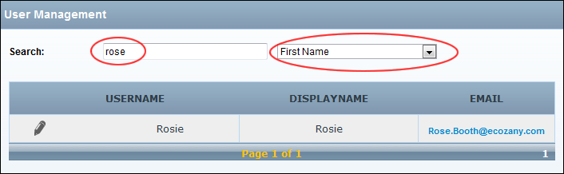

Searching Forum User Accounts
How to search forum user accounts by username, email, display name, first name or last name.
- Go to the Forum Administration page. See "Navigating to the Forum Admin Page"
- In the left-hand panel, select Users > Users. This displays the User Management window.
- Select from these two options:
Option One:
- In the Search text box, enter the search criteria.
- Select one of the following filters from the drop down list:
- All: Returns all users whose account includes the criteria.
- Online: View all online users who match the search criteria.
- Username: View all for exact matches and all or part of the beginning of the username. E.g. Entering Ad, Admin, or A will return Admin.
- Display Name: Searches for exact matches and all or part of the beginning of the display name. E.g. Entering R will return all names beginning with R.
- Email: Displays partial and exact matches to the beginning of the email address.
- First Name or Last Name: Searches for exact matches and all or part of the beginning of the name. E.g. Entering R will return all names beginning with R.

Option Two:
- Select Role from the right-hand drop down list. This displays each role type in the left-hand drop down list.
- Select the name of the role from the first drop down list.

-
See "Editing any Forum User's Profile"